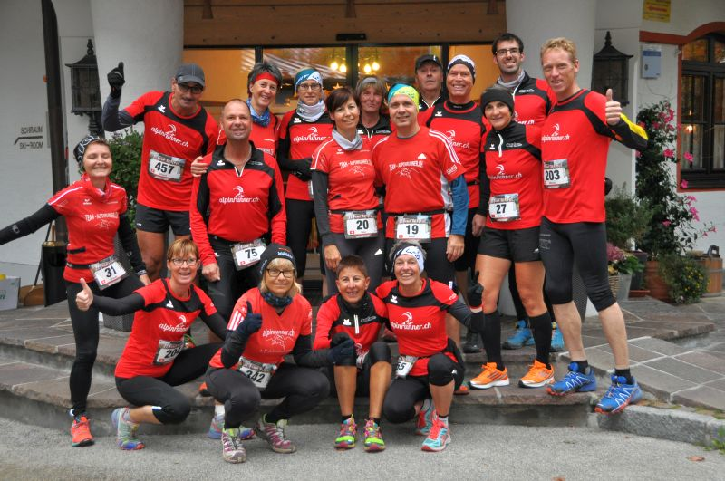

Alpinrunner
Gletscher Trailrun Obergurgl abgesagt
Obergurgl

Leider ist dieser Anlass abgesagt - der nächste Gletscher Trailrun fimndet am 9.-10. Juli 2021 statt. Ob wir Alpinrunner dabei sein werden informieren wir mit dem Jahresprogramm 2021
Kommst du auch mit uns Alpinrunner ins Ötztal nach Obergurgl, dann melde dich gleich mittels des Formulares an.
Wir reisen am Freitag, 10. Juli nach Obergurgl, es gibt noch Zimmer mit Halbpension für zwei Nächte im Hotel Mathiesn***S jetzt melden damit wir die Zimmer reservieren können (Preis p.Zimmer/Nacht ca. Fr. 180.-)
Am Samstag finden die Renne statt:
Gletscher Trail 10K: 10 km, 750 hm+
Gletscher Trail 22K: 22,1 km, 1900 hm+
Gletscher Trail 42K: 42,3 km, 2800 hm+
Gletscher Ultra Trail: 66 km, 3900 hm+
Folgende Alpinrunner/innen sind mit dabei
- Marco Jäger 42 K
- Petra Jäger 22 K
- Röbi Conrad 22 K
- Maria Conrad 22 K
- Iris Capatt 22 K
- Martin Ledermann 22 K oder 42K